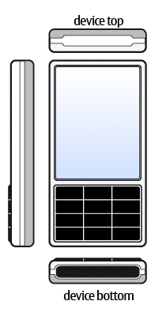

Sensors
The Sensors API is primarily concerned with low-level, real-time sensors such as the accelerometer although there are higher-level, event-driven sensors represented too.
Namespace
The QtMobility APIs are placed into the QtMobility namespace. This is done to facilitate the future migration of QtMobility APIs into Qt. See the Quickstart guide for an example on how the namespace impacts on application development.
Sensor Types
On a device there can be many types of sensors. Not all of the types that the Sensors API supports may be available. There may also be types available that are not defined in the Sensors API. You can find the sensor types available on a device using the QSensor::sensorTypes() function.
For a list of built-in sensor types, see the Sensor Classes section below.
Common Conventions
Unless otherwise specified, sensors shall use the Right Hand Cartesian coordinate system.

To allow for measurements in all 6 directions, negative values are used.

Where rotation around an axis is used, the rotation shall be expressed as a Right Hand rotation.

In general, sensor data is oriented to the top of the device. If values are to be displayed on the screen the values may need to be transformed so that they match the user interface orientation. A sensor may define its data as being oriented to the UI. This will be noted in the documentation for the sensor.

Using a Sensor
The life cycle of a sensor is typically:
- Create an instance of QSensor or one of its sub-classes on the stack or heap.
- Setup as required by the application.
- Start receiving values.
- Sensor data is used by the application.
- Stop receiving values.
Here is an example of creating a sensor on the heap and on the stack.
// On the heap (deleted when this object is deleted) QAccelerometer *sensor = new QAccelerometer(this); // On the stack (deleted when the current scope ends) QOrientationSensor orient_sensor;
Accessing sensor data in a generic fashion
The preferred way to deal with sensor data is via the Reading Classes. However, sometimes this may not be possible. For example, you may be deploying an application to a device that has a new sensor type but no C++ header describing the reading class is available.
Thanks to Qt's property system you can still access the sensor data. You need to know 3 pieces of information in order to do this:
- The sensor type.
- The property name or index.
- The property type or a comparable type.
For example, here is an example of how you can access a property of the accelerometer. This code does not require any compile-time links to QAccelerometer or QAccelerometerReading.
// start the sensor QSensor sensor("QAccelerometer"); sensor.start(); // later QSensorReading *reading = sensor.reading(); qreal x = reading->property("x").value<qreal>(); qreal y = reading->value(1).value<qreal>();
You can discover all of this information at runtime too. The sensor_explorer example shows you information about available sensors.
Platform notes
S60 3rd Edition
Note that support for sensors in S60 3.1 device is extremely limited due to the native API. Only the accelerometer is supported and only a few devices.
Some devices running S60 3.2 support a newer native API and therefore support more sensors.
More information about these platforms can be found here.
Note that timestamps on this platform come from the system clock. Applications need to handle shifts in time caused by the user manually setting the clock or from the automatic time synchronization feature setting the clock.
Symbian
Most Symbian devices have their sensor data read via the Sensor Framework API. Some limitations appear in the Sensors API as a result.
Only specific data rates can be selected. Setting an invalid data rate has no effect so applications that need to influence the used data rate should connect to the sensor, check the available data rates and select one as appropriate.
Readings are delivered to the application via a queue. If the application blocks the event loop or otherwise interferes with the ability of the system to deliver readings (eg. by using up too much CPU time), they can get blocked in this queue. Since delayed readings are not useful, the system will drop readings as needed so that the application is always dealing with the most recent reading available. The application can tweak the policy by setting properties on the sensor.
The default policy is to accept up to 100 readings from the system at once and to discard all but the last one.
QAccelerometer sensor;
sensor.setProperty("maximumReadingCount", 100);
sensor.setProperty("processAllReadings", false);
Applications that desire the original behaviour can set the maximumReadingCount to 1. Note that this does not guarantee that readings will not be dropped by the system. If the queue fills up, readings will be dropped.
QAccelerometer sensor;
sensor.setProperty("maximumReadingCount", 1);
Larger maximumReadingCount values reduce the need for the lower-priority sensor daemon to get CPU timeslices. If the application is using lots of CPU but is still able to process readings quickly, it can request that all the fetched readings are processed.
QAccelerometer sensor;
sensor.setProperty("maximumReadingCount", 10);
sensor.setProperty("processAllReadings", true);
More information about the native API can be found here.
Note that timestamps on this platform come from the system clock. Applications need to handle shifts in time caused by the user manually setting the clock or from the automatic time synchronization feature setting the clock.
The ambient light sensor can only detect changes. Unlike all other sensors, it cannot report the "current value" so it is not possible to determine the current ambient light level.
Maemo 5
The N900 represents a unique device for the Sensors API. Unlike the Symbian and MeeGo platforms, sensor data is retrieved directly from the kernel and this has implications on the API.
Axes are rotated when compared to Symbian or MeeGo devices. While Symbian and MeeGo devices orient their hardware sensors towards a portrait orientation, the N900 does not do this. Instead, it orients the hardware sensors towards its default landscape orientation. This has portability implications for applications that want to force the use of a particular screen orientation and use sensors. The following code shows how accelerometer values can be interpreted to ensure consistent results on the N900 as well as Symbian and MeeGo devices.
#ifdef Q_WS_MAEMO_5
qreal x = reading->y();
qreal y = -reading->x();
#else
qreal x = reading->x();
qreal y = reading->y();
#endif
qreal z = reading->z();
Alternatively, applications can set the environment variable N900_PORTRAIT_SENSORS to 1. This must be done before any Sensors API calls are made so the beginning of the main function is a good place to do it.
int main(int argc, char **argv)
{
qputenv("N900_PORTRAIT_SENSORS", "1");
...
Despite hardware that allows for multiple data rates and output ranges, the Sensors API does not allow access to these due to permissions issues.
Readings are polled using a timer. If the application blocks the event loop or otherwise interferes with the ability of the timer to fire, readings will be missed. There are no queues so applications must ensure that they process the readings promptly (possibly saving them into a buffer for later processing if required).
MeeGo
The data rates offered by MeeGo are not tied to how fast the hardware runs.
The default data rate for a sensor is likely to be low when compared to Symbian or Maemo 5. Applications should request a suitable data rate, taking care to avoid selecting invalid rates on other devices.
Sensors may be suspended by the system in order to save power. Applications can avoid this by setting a property on the sensor object.
QAccelerometer *accelerometer = new QAccelerometer(this);
accelerometer->setProperty("alwaysOn", true);
accelerometer->start();
Unlike Symbian and N900, MeeGo does not currently provide initial readings. Thus, certain sensors must detect a change in value before a value can be reported. Examples include the orientation sensor and ambient light sensor.
Front end, back end
The Sensors API has a front end, for application developers to use and a back end, where device implementors write code to access their hardware. As an application developer you do not need to access the back end though it may be useful to understand how it works.
Commands from the application are delivered through QSensor and then down to the device plugin. Data comes back through the QSensorReading class.
More information about the back end can be found in Sensors Backend.
Main Classes
The primary classes that make up the Sensors API.
Represents a single hardware sensor | |
Efficient callback facility for asynchronous notifications of sensor changes | |
Holds the readings from the sensor |
Reading Classes
The best way to access sensor data is via one of these classes.
Reports on linear acceleration along the X, Y and Z axes | |
Represents one reading from the ambient light sensor | |
Represents one reading from a compass | |
Represents one reading from the gyroscope sensor | |
Represents one reading from the light sensor | |
Represents one reading from the magnetometer | |
Represents one reading from the orientation sensor | |
Represents one reading from the proximity sensor | |
Represents one reading from the rotation sensor | |
Represents one reading from the tap sensor |
Sensor Classes
These classes provide convenience wrappers that reduce the need for casting. Each of these classes represents a sensor type that the Sensors API knows about. Note that additional types may be made available at run-time. See Sensor Types for more information.
Convenience wrapper around QSensor | |
Convenience wrapper around QSensor | |
Convenience wrapper around QSensor | |
Convenience wrapper around QSensor | |
Convenience wrapper around QSensor | |
Convenience wrapper around QSensor | |
Convenience wrapper around QSensor | |
Convenience wrapper around QSensor | |
Convenience wrapper around QSensor | |
Convenience wrapper around QSensor |
Filter Classes
As with the sensor classes, these provide convenience wrappers that reduce the need for casting.
Convenience wrapper around QSensorFilter | |
Convenience wrapper around QSensorFilter | |
Convenience wrapper around QSensorFilter | |
Convenience wrapper around QSensorFilter | |
Convenience wrapper around QSensorFilter | |
Convenience wrapper around QSensorFilter | |
Convenience wrapper around QSensorFilter | |
Convenience wrapper around QSensorFilter | |
Convenience wrapper around QSensorFilter | |
Convenience wrapper around QSensorFilter |